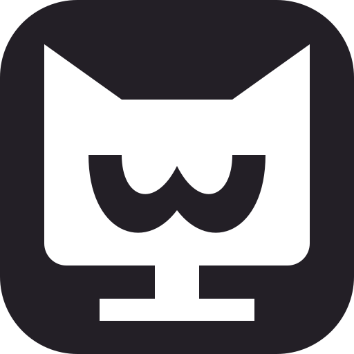
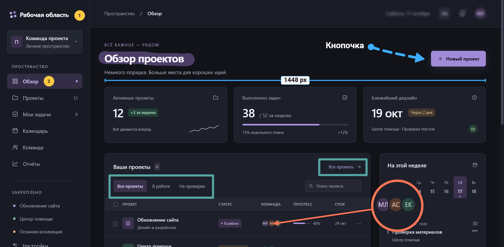

Стрелки
Укажите на нужную кнопку или свяжите части снимка прямой, дугой или ломаной.

Cute ScreenСнять, отметить, сохранить. Всё локально.
Открытый код.

ИНСТРУМЕНТЫ
От короткой пометки до подробной инструкции — прямо на снимке.
Укажите на нужную кнопку или свяжите части снимка прямой, дугой или ломаной.
Обведите важный блок. Настройте форму, заливку и обводку.
Обведите от руки, сделайте набросок или проведите ровную линию с Shift.
Подсветите ключевые слова, сохранив текст читаемым.
Добавьте пояснение. Выберите шрифт, размер, цвет и фон подписи.
Разложите инструкцию на шаги. Номера продолжаются автоматически.
Соедините деталь с пояснением, расположенным рядом со снимком.
Закройте выбранную область мозаикой, размытием или сплошной заливкой.
Оставьте нужную область светлой, приглушив остальную часть снимка.
Увеличьте небольшой фрагмент, чтобы детали были видны с первого взгляда.
Покажите расстояние в пикселях или процентах и направление измерения.
Возьмите цвет со снимка и используйте его в аннотациях.
Оставьте в кадре только то, что относится к делу.
Добавьте ещё одну картинку и соберите несколько фрагментов в одну композицию.
Перемещайте объекты и меняйте их параметры после создания.
Перемещайтесь по холсту, не сдвигая аннотации.
Снимки остаются на вашем устройстве.Без аккаунта и облачной обработки.